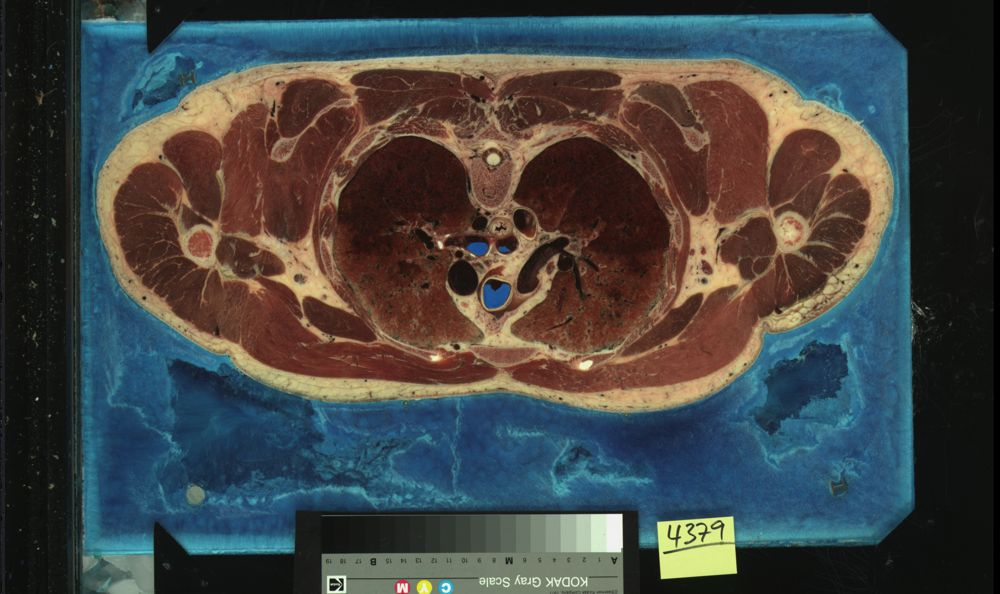
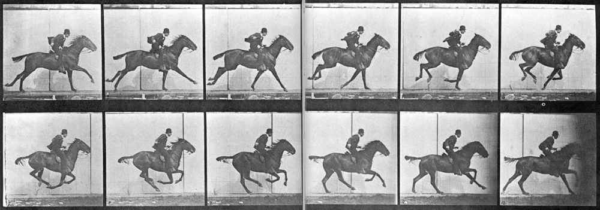

The data a model of the ideal body needs.
We are in the collection phase. A team of AI research agents gathers research, anatomy, measurements, images and films from around the world into a private research library, checks every item, and records where it came from and what may be done with it.
Exact figures as of 18 November 2026. The library grows every day.
What is in it so far.
Two complete copies of the world's research.
Most research projects search the literature one query at a time, through someone else's website and daily limits. We downloaded two complete, openly licensed copies of the scholarly record and search them on our own hardware.
241,023,138 papers
The full public release of 10 November 2026: 928 files, 851,036,116,131 bytes. It holds the metadata of 241,023,138 papers, 51,361,566 abstracts, the complete citation graph linking them, and the full texts of the openly licensed papers. From it our agents have already pulled 15,419 full-text papers on fascia, tensegrity and tissue mechanics into the library, and built a catalog of 141,810 relevant records.
Licence: ODC-BY. Citation graph: every "who cites whom" link, so we can follow any idea forward and backward through the literature.
The open catalog of scholarly works
The complete OpenAlex snapshot: 1,898 works files, 755,515,230,168 bytes. It covers works across every field with their authors, institutions, journals, topics, languages and citations, which lets us search research by country and language, not only in English.
Licence: CC0. Used to find what exists in Chinese, Russian, Japanese, Portuguese and dozens of other languages, and which institutions study what.
How we use them: on our own GPUs, local AI models turn tens of millions of these papers into a searchable map of human knowledge. The map shows where research on the body is dense and where it is missing, so the agents can be sent to fill the gaps. Every answer the model gives can be traced back to the papers it came from.
A complete male and female body, section by section.
The U.S. National Library of Medicine's Visible Human Project sectioned a male and a female body into thin slices and photographed each one. We hold the complete set: 79,224 files, 395.7 GB, every file size-checked against its source.
- Cross-section photographs: 9,808 male and 12,545 female images in full resolution, head to foot.
- Full-color and 70 mm film scans of the same sections, at the highest detail the project produced.
- Radiological images: CT and MRI of both bodies before sectioning.
- Visible Human 2.0 data from later reprocessing of the original sections.
These two bodies are the scaffold for the 3D model. Each slice shows bone, muscle, fat, organs, vessels and the fascia between them, in place. Around that scaffold, papers and measurements from reputable sources supply what a single body cannot: the range of human sizes, the mechanics of each tissue, and how bodies move.


55,133 images, films and books of the body.
46,354 images, 2,924 videos and 943 illustrated books, each with its source and licence recorded. They show what the human body can do at its best, and how it has been drawn and studied for centuries.
By subject
Largest subjects shown; the rest are other sports, research videos and medical art.
By source
Movement data
Beyond pictures: the Carnegie Mellon University motion-capture library; gait databases from PhysioNet (MIT), the University of Kuopio and others; rehabilitation movements (UI-PRMD); OpenSim musculoskeletal models from Stanford (1,066 files); and high-density muscle-signal recordings from PhysioNet (57,501 files). A further 140,564 videos from 39 reputable channels, including sport federations, are catalogued for later review.


Twelve datasets.
Every item we collect is tagged with the datasets it serves. Together they are the raw material for the model of the ideal body, its imperfections, and the experience of living in it.
D1Skeleton
The exact 3D shape of every bone, male and female, and where each sits in space.
From: the Visible Human sections and CT; BodyParts3D and Z-Anatomy 3D models; TotalSegmentator and AMOS22 labeled scans; OpenSim models; the osteology of Gray, Quain and Testut.
D2Fascia network
The continuous connective-tissue web: its layers, thickness, attachments and continuity.
From: the fascia literature of the Padua, Ulm and Frankfurt groups and others through PubMed Central and Europe PMC; full texts from the Semantic Scholar copy; Japanese and Korean physical-therapy research; thoracolumbar fascia ultrasound data; pre-1931 monographs on aponeuroses.
D3Contents of fascia
Organs, vessels, nerves, skin, fat and hair follicles: their shapes, depths and spacing.
From: the Visible Human sections; labeled organ scans; 64,314 skin and hair image files; vascular and nerve anatomy from atlases and papers.
D4Range of motion
Joint limits, yoga poses, contortion and extreme movement.
From: CMU motion capture; PhysioNet and Kuopio gait databases; OpenCap and OpenSim; 55,133 images and films of elite movers; sport federation video catalogs.
D5Mechanics, atoms to body
Shear, stress, tension, friction and stretch for every tissue.
From: tendon, fascia and force-transmission datasets on Dryad; tissue physics from arXiv; high-density muscle-signal recordings from PhysioNet; published material tests of human tissue.
D6Reference bodies
Heights, proportions and distances by sex and population.
From: the U.S. Army ANSUR II survey; Size Korea, with 6,410 people measured 148 ways; the DINED anthropometry database; 19,431 anthropometry files in all.
D7Imperfections
A measurable list of the ways the ideal body can deviate: densification, scarring, posture, fat, injury.
From: clinical and imaging research on adhesion, fibrosis, contracture and posture; and the evidence that cuts against the model, read and recorded with a verdict for each study.
D8Nervous system
How the body's physics becomes sensation: receptors, thresholds, interoception, pain and touch.
From: research on the nerves within fascia, interoception and pain science, and the work of Friston and others on how the brain models the body.
D9Mental health
Psychology and psychiatry, stress and trauma in the body, posture and emotion.
From: psychiatric and psychological literature, the history of psychiatry, and studies linking body and mood. Being expanded now. Mental health →
D10Disease shapes
Images and measurements of people living with specific conditions.
From: NIH chest X-rays (ChestX-ray14); captioned medical images (ROCOv2); spine MRI and X-ray sets; the literature on conditions that change the body's shape, such as ankylosing spondylitis.
D11Development
How the body grows from embryo to adult.
From: embryology and the founding "mechanics of development" literature (Roux's Archiv, from 1894); growth surveys of children aged 7 to 19; fetal and scoliosis studies.
D12Mind and traditions
Theories of consciousness, and the contemplative and body traditions that have studied it longest.
From: theories of consciousness and their critics; 9,949 tradition texts: Sanskrit from GRETIL and SARIT, Chinese classics from Wikisource, yoga, Ayurveda, Tamil Siddha and osteopathy books from the Internet Archive and Europe PMC.
How it is gathered, and checked.
A team of AI research agents works in rounds, around the clock. Each round, a planning council reviews what came in, measures it against the twelve datasets, and sends the next agents toward what is still missing. An independent auditor checks the council's plan for errors, and two outside AI systems from other companies review it for blind spots.
- Checked on arrival. Files are verified against their source by checksum or size; 30 Visible Human images chosen at random were fully decoded with zero errors.
- Checked for relevance. Before any collection grows, a blind sample of 20 items is read and judged. Below 80% on topic, the search is narrowed before continuing.
- Checked for rights. Every document carries its licence and what it may be used for: 84,604 can be published, 18,293 for non-commercial use, 61,215 quoted only.
- Checked against us. One agent's job is to find work that contradicts the model and record it fairly. 36 real counter-findings have been read so far, each with its verdict.
Building the collection further.
Open sources come first: open-access journals, preprint servers, university repositories across Europe, Asia and the Americas, public anatomy collections, research data archives and historic books in the public domain.
We are also purchasing thousands of dollars of books and other materials: the anatomy atlases, fascia texts, measurement standards and key papers that open access does not reach.
How it will be used.
To build the model. The Visible Human sections become a 3D body; papers and measurements give every tissue its real dimensions and mechanics. To measure. Computer vision models read the images for distances, angles and patterns. To answer. Local AI models index everything, so any question can be answered from the evidence, including the evidence against us. The road ahead →
The library is a private research collection used to build and test the model. It is not redistributed.